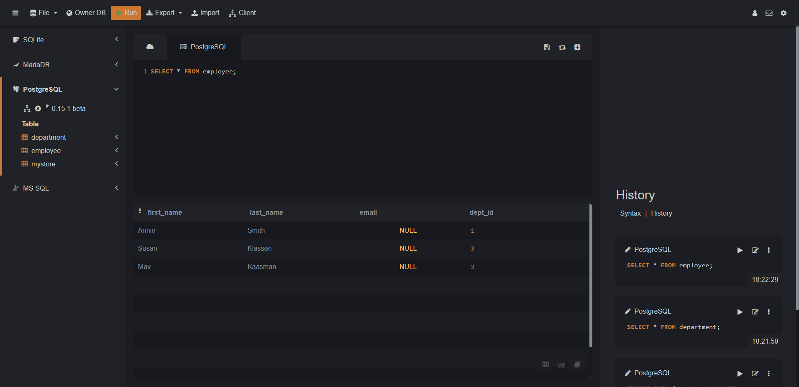

The FOREIGN KEY constraint is used to prevent actions that would destroy links between tables.
A FOREIGN KEY is a field (or collection of fields) in one table, that refers to the PRIMARY KEY in another table.
The table with the foreign key is called the child table, and the table with the primary key is called the referenced or parent table.
The FOREIGN KEY constraint prevents invalid data from being inserted into the foreign key column, because it has to be one of the values contained in the parent table.
CONSTRAINT [constraint_name] FOREIGN KEY(fk_columns)
REFERENCES <parent_table>(parent_table_columns)
[ON DELETE <delete_action>]
[ON UPDATE <update_action>]
CREATE TABLE department(
dept_id INT PRIMARY KEY,
dept_name VARCHAR(50)
);
CREATE TABLE employee(
first_name VARCHAR(50),
last_name VARCHAR(50),
email VARCHAR(100),
dept_id INT,
CONSTRAINT FK_Employee_Department FOREIGN KEY(dept_id)
REFERENCES department(dept_id)
);
Insert data to the table:
INSERT INTO department VALUES
(1,'HR'),
(2,'IT'),
(3,'FINANCE');
INSERT INTO employee(first_name, last_name, dept_id) VALUES
('Annie','Smith',1),
('Susan','Klassen',3),
('May','Kaasman',2);
Department Table:
Employee Table:
